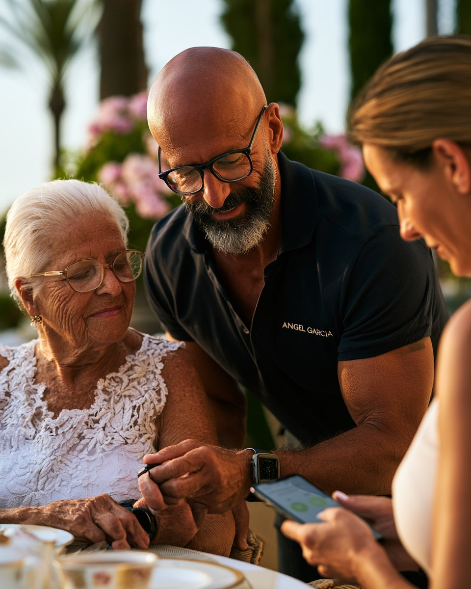

Sensora combina señales de wearables, contexto del paciente y priorización inteligente en una orientación clara — las 24 horas. Y yo uno Sensora con lo que ninguna tecnología sustituye: más de 20 años de cuidados intensivos, personalmente a su lado.
Sensora es una capa inteligente de información y priorización para una atención más segura: señales de wearables, contexto y lógica de priorización se combinan para que los cambios relevantes sean visibles antes — antes de que se agraven.
Lo decisivo no es la tecnología por sí sola. Es la unión con una persona que sabe interpretar las señales: durante más de veinte años en cuidados intensivos aprendí a reconocer la evolución antes de que se vuelva grave. Sensora da a esa experiencia una ventaja.
Esta combinación — tecnología de care intelligence de vanguardia y acompañamiento de enfermería personal — no la encontrará dos veces en Mallorca.

Para personas que viven en Mallorca — y para familias que no siempre pueden estar presentes. Sensora Care aporta visión de conjunto, calma y una verdadera ventaja.
Las señales de los wearables se reúnen de forma estructurada las 24 horas. No como una avalancha de datos, sino como base para una orientación clara — de día y de noche.
Los cambios relevantes deben hacerse visibles antes de que se agraven. Interpreto las señales de forma profesional y actúo de forma proactiva — en vez de esperar a que ocurra algo.
Ya sea Múnich, Zúrich o Londres: su familia obtiene un acceso estructurado y comprensible a distancia — implicada, sin verse desbordada por la información.
Sensora no muestra simplemente más valores, sino que ordena relevancia, urgencia y contexto — para que quede claro qué importa de verdad ahora.
Ningún call center, ningún algoritmo por sí solo: las señales llegan a mí. Más de 20 años de enfermería en cuidados intensivos y anestesia respaldan cada valoración.
Cifrado como principio de diseño, RGPD art. 9 en el foco, accesos basados en roles y alojamiento en la UE como base conceptual de la plataforma.
La monitorización pura detecta sucesos. Sensora Care combina señales con contexto y priorización — y yo uno ambos con un acompañamiento personal sobre el terreno.
La tecnología no sustituye la experiencia. Pero le da una ventaja — y es exactamente esa ventaja la que transmito a mis clientes.Angel Garcia
Hablamos de su situación: a quién se va a acompañar, qué es importante para usted, cómo está implicada la familia. Sin compromiso y con calma.
Lo configuro todo — wearable, app, accesos para los familiares que usted decida. Explicado de forma comprensible, sin barreras técnicas, en su casa.
A partir de ahora yo vigilo las señales, su familia la app — y hemos acordado con claridad qué ocurre ante cada señal. Puede respirar tranquilo.
Sensora está concebida como plataforma para datos de salud — con la protección de datos, la seguridad y la gobernanza como base, no como añadido. Y conmigo rige lo que siempre rige: discreción absoluta.
Cifrado como principio de diseño — en transmisión y almacenamiento
RGPD art. 9 (categorías especiales de datos) en el foco desde el principio
Accesos basados en roles — solo las personas que usted designe
Alojamiento en la UE y registro trazable como base conceptual
No. Sensora Care es un sistema de orientación y detección temprana, no un sistema de emergencias. En una emergencia médica aguda, llame siempre primero al 112. Sensora ayuda a ver la evolución antes — no sustituye al servicio de emergencias.
No — ese es justo el punto. Solo se lleva un wearable, nada más. La configuración la hago en persona, lo explico todo con calma y sigo siendo la persona de contacto para cualquier pregunta. Nadie tiene que entender de tecnología para beneficiarse de ella.
Solo las personas que usted designe — basado en roles y trazable. Sin compartir con terceros, sin uso para otros fines. La discreción es mi base, no un extra.
No. Sensora Care aporta orientación — los diagnósticos y las decisiones terapéuticas los toman exclusivamente los médicos responsables. Yo me ocupo de que las observaciones relevantes lleguen antes a las personas adecuadas.
Depende del alcance del acompañamiento. Tras la primera conversación recibe una propuesta clara y transparente — sin costes ocultos y sin compromiso.
¿No encuentra su pregunta? Escríbame simplemente por WhatsApp — hablará directamente conmigo.
No es una charla de ventas — una mirada clara a su situación. Comprobamos juntos si Sensora Care es el camino adecuado para usted o sus familiares. Confidencial y sin compromiso.
Español · Deutsch · English — hablará directamente conmigo, no con una oficina. Respuesta normalmente en un plazo de 24 horas.